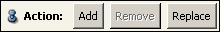

Ports
Mode
Select bond calculation method. For more information on bond calculation methods please refer to Molecule Editor's documentation.
Maximal atom distance

Action

Starts the computation of the new molecule. "Add" will compute new bonds according to the chosen parameters and add the newly computed bonds to the molecule, "Remove" will remove bonds that match the respective parameters. Some of these bonds might not be present in the molecule, but this is not a problem. "Replace" will first remove all bonds and then add those that match the given parameter configuration.